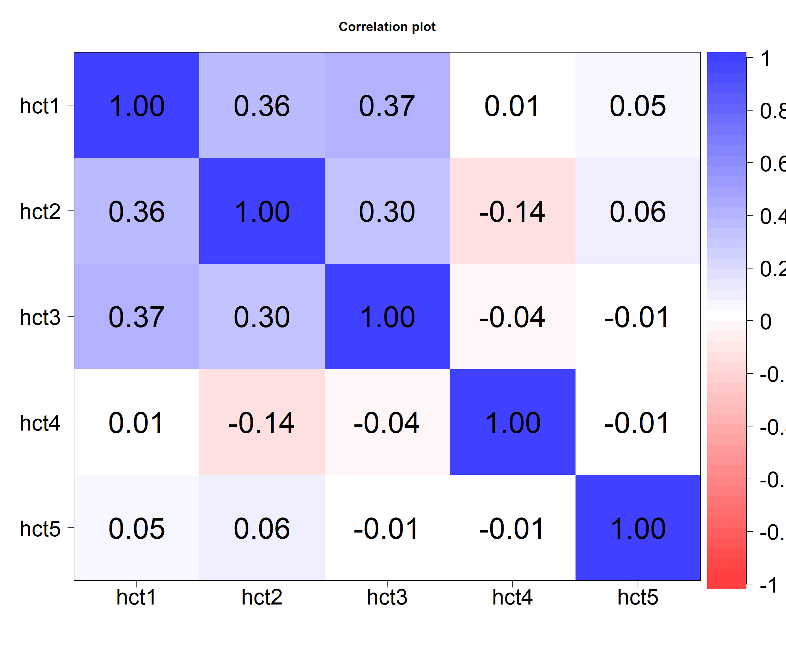

Code
matDF <-
readstata13::read.dta13("C:/Dataset/olivia_data_wide.dta") %>%
select(hct1, hct2, hct3, hct4, hct5)We begin by reading in the data and selecting our desired variables
matDF <-
readstata13::read.dta13("C:/Dataset/olivia_data_wide.dta") %>%
select(hct1, hct2, hct3, hct4, hct5)Next we summarize the data
summarytools::dfSummary(matDF, graph.col = F)Data Frame Summary
matDF
Dimensions: 350 x 5
Duplicates: 3
------------------------------------------------------------------------------------
No Variable Stats / Values Freqs (% of Valid) Valid Missing
---- ----------- ------------------------ --------------------- ---------- ---------
1 hct1 Mean (sd) : 34.2 (5.6) 133 distinct values 350 0
[numeric] min < med < max: (100.0%) (0.0%)
10.5 < 33.7 < 49.9
IQR (CV) : 7.6 (0.2)
2 hct2 Mean (sd) : 34.2 (5.6) 119 distinct values 350 0
[numeric] min < med < max: (100.0%) (0.0%)
10.2 < 33.2 < 54.9
IQR (CV) : 7.9 (0.2)
3 hct3 Mean (sd) : 34.8 (6.3) 128 distinct values 350 0
[numeric] min < med < max: (100.0%) (0.0%)
4.3 < 33.2 < 75.5
IQR (CV) : 8.6 (0.2)
4 hct4 Mean (sd) : 36.8 (7.6) 164 distinct values 350 0
[numeric] min < med < max: (100.0%) (0.0%)
10.4 < 36 < 76.5
IQR (CV) : 6.4 (0.2)
5 hct5 Mean (sd) : 45.9 (9.5) 186 distinct values 350 0
[numeric] min < med < max: (100.0%) (0.0%)
6.2 < 45.7 < 92.3
IQR (CV) : 8.6 (0.2)
------------------------------------------------------------------------------------We begin by running a correlation coefficient matrix with lower segment shown
psych::lowerCor(matDF, method = "pearson") hct1 hct2 hct3 hct4 hct5
hct1 1.00
hct2 0.36 1.00
hct3 0.37 0.30 1.00
hct4 0.01 -0.14 -0.04 1.00
hct5 0.05 0.06 -0.01 -0.01 1.00And then a lot more detail with p-values and confidence interval (Normal)
psych::corr.test(matDF, method = "pearson") %>%
print(short=F)Call:psych::corr.test(x = matDF, method = "pearson")
Correlation matrix
hct1 hct2 hct3 hct4 hct5
hct1 1.00 0.36 0.37 0.01 0.05
hct2 0.36 1.00 0.30 -0.14 0.06
hct3 0.37 0.30 1.00 -0.04 -0.01
hct4 0.01 -0.14 -0.04 1.00 -0.01
hct5 0.05 0.06 -0.01 -0.01 1.00
Sample Size
[1] 350
Probability values (Entries above the diagonal are adjusted for multiple tests.)
hct1 hct2 hct3 hct4 hct5
hct1 0.00 0.00 0.00 1.00 1
hct2 0.00 0.00 0.00 0.07 1
hct3 0.00 0.00 0.00 1.00 1
hct4 0.86 0.01 0.51 0.00 1
hct5 0.35 0.25 0.82 0.84 0
Confidence intervals based upon normal theory. To get bootstrapped values, try cor.ci
raw.lower raw.r raw.upper raw.p lower.adj upper.adj
hct1-hct2 0.26 0.36 0.45 0.00 0.22 0.48
hct1-hct3 0.28 0.37 0.46 0.00 0.24 0.50
hct1-hct4 -0.10 0.01 0.11 0.86 -0.10 0.11
hct1-hct5 -0.05 0.05 0.15 0.35 -0.09 0.19
hct2-hct3 0.20 0.30 0.39 0.00 0.16 0.43
hct2-hct4 -0.24 -0.14 -0.03 0.01 -0.28 0.00
hct2-hct5 -0.04 0.06 0.17 0.25 -0.08 0.20
hct3-hct4 -0.14 -0.04 0.07 0.51 -0.17 0.10
hct3-hct5 -0.12 -0.01 0.09 0.82 -0.14 0.12
hct4-hct5 -0.12 -0.01 0.09 0.84 -0.13 0.11Bootstrapped coefficients and confidence interval can be obtained as below
psych::cor.ci(matDF, cex.axis = 2, cex.lab = 3)
Call:corCi(x = x, keys = keys, n.iter = n.iter, p = p, overlap = overlap,
poly = poly, method = method, plot = plot, minlength = minlength,
n = n, cex.axis = 2, cex.lab = 3)
Coefficients and bootstrapped confidence intervals
hct1 hct2 hct3 hct4 hct5
hct1 1.00
hct2 0.36 1.00
hct3 0.37 0.30 1.00
hct4 0.01 -0.14 -0.04 1.00
hct5 0.05 0.06 -0.01 -0.01 1.00
scale correlations and bootstrapped confidence intervals
lower.emp lower.norm estimate upper.norm upper.emp p
hct1-hct2 0.26 0.24 0.36 0.47 0.48 0.00
hct1-hct3 0.27 0.26 0.37 0.47 0.47 0.00
hct1-hct4 -0.08 -0.10 0.01 0.12 0.11 0.87
hct1-hct5 -0.06 -0.08 0.05 0.15 0.16 0.53
hct2-hct3 0.16 0.14 0.30 0.46 0.46 0.00
hct2-hct4 -0.22 -0.21 -0.14 -0.07 -0.07 0.00
hct2-hct5 -0.05 -0.04 0.06 0.15 0.15 0.27
hct3-hct4 -0.13 -0.14 -0.04 0.07 0.06 0.56
hct3-hct5 -0.12 -0.13 -0.01 0.09 0.09 0.72
hct4-hct5 -0.16 -0.15 -0.01 0.14 0.13 0.93matDF %>%
cor() %>%
ggcorrplot::ggcorrplot(hc.order = FALSE,
type = "lower",
lab = TRUE,
lab_size = 3,
method="square",
colors = c("tomato2", "white", "springgreen3"),
title="Correlogram of blood indices",
ggtheme=theme_bw)
Graphically we can use this
matDF %>%
cor() %>%
corrplot::corrplot(type = "lower", tl.pos = "ld",
title = "Out correlation matrix", addCoef.col = "black",
outline = "black", number.cex = .8)#|mmessage: false
#|warning: false
GGally::ggpairs(data = matDF, ggplot2::aes(color = hct1>30))Registered S3 method overwritten by 'GGally':
method from
+.gg ggplot2